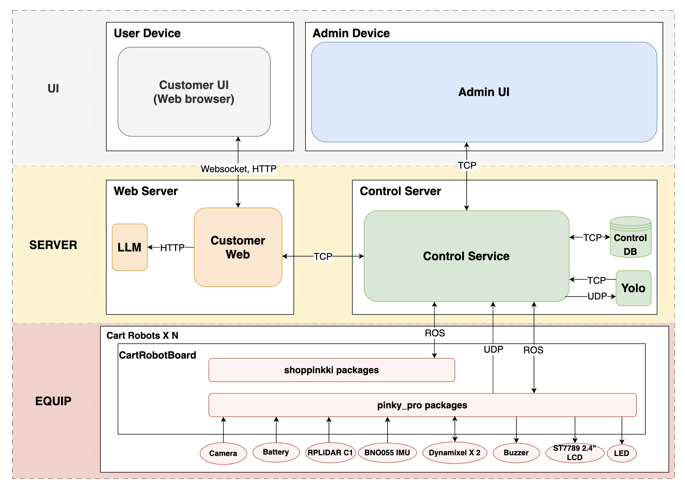
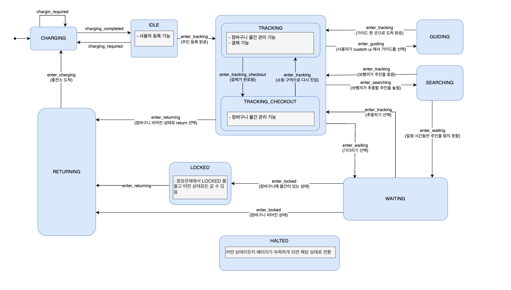

Pinky Pro 로봇 기반 미니어처 마트 스마트 쇼핑 카트 시스템. 고객(데모=인형)을 인식·추종하며 상품 검색·안내·결제·충전소 복귀까지 자동 처리하는 자율주행 다중 로봇(Fleet) 데모.
GitHub ros-repo-2 · 발표자료 netlify


10개 상태의 WAITING·LOCKED·RETURNING 전환 설계 (LOCKED은 WAITING에서만 진입해 무결성 확보). 대기 300초 config 중앙화 · BoundaryMonitor로 결제구역 진입 감지 · 세션 생명주기(멱등성·만료 자동정리)까지 상태·세션 무결성 전담.
customer_web(Flask·SocketIO) 손님 앱 전반 — QR 상품 스캔·장바구니 실시간 동기화, QR 결제 흐름, 대기 카운트다운·자동 복귀 UI 연동.
admin_ui(PyQt5)에 개발·디버깅 편의 기능 추가 — 로봇 위치보정을 시뮬(Gazebo teleport)/실물(AMCL) 단일 명령으로 통합, teleport bridge로 시뮬↔실물 동일 조작.
팀 추종 파이프라인 기여 — YOLO11n-seg 검출 · ReID/HSV 주인 식별 · P 추종제어(PID 구조로 구현 후 P 게인만 사용).
미결제 고객이 결제구역을 지나 출구로 이탈할 수 있는 구조적 허점. 상태만으로 막으면 추종 로직과 결합도가 높아집니다.
상태(SM)와 통행제어(Nav2)를 분리 — BoundaryMonitor + 결제 predicate로 Keepout Filter 동적 on/off. 세션 꼬임은 하드닝 + pre-commit 게이트로 차단.
여러 인형 중 주인 인형만 골라 추종해야 하는데 ReID 특징벡터 단독은 유사 인형을 오인식. Pi 5 CPU로 무거운 CNN 상시 구동도 부담.
ReID 코사인 AND HSV 색 분포(Pearson 상관계수)의 AND 게이트(reid≥0.48 · hsv≥0.38) + track_id 5프레임 락으로 안정화. Pi 5 제약엔 torch 미설치 시 6-float 색상통계 fallback 설계로 엣지 대응.
상태머신 무결성 설계와 세션 경쟁조건 처리, 그리고 표준 프레임워크가 항상 정답은 아니라는 것 — 규모에 맞는 최소 구현의 가치를 배웠습니다.
CPU·지연·인식 정확도 등 정량 성능 측정을 하지 못해 개선 효과를 수치로 제시하지 못했습니다.
결제 감지 지연·UI 반영 지연 등 핵심 경로에 측정 로그를 추가하고, fleet_router의 DB 재조회를 최적화하겠습니다.
상태 전환 규칙을 처음부터 표로 명세하고, 회귀 테스트를 설계 단계에서 함께 작성하겠습니다.